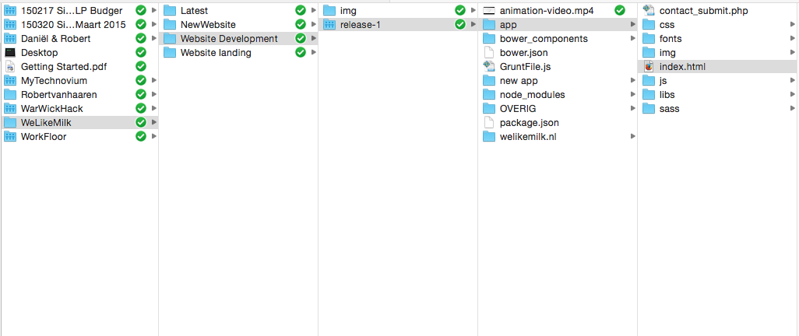
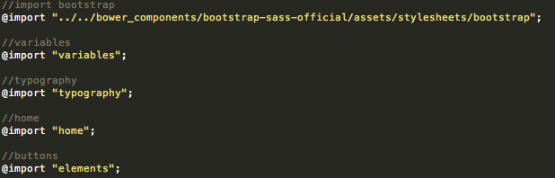
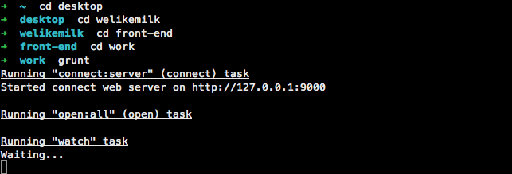
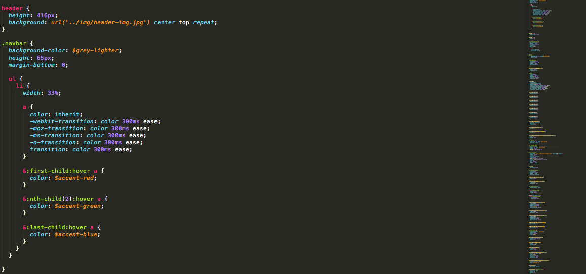

In het vierdejaar van de opleiding mediavormgever zal er voor de derde keer stage worden gelopen. Tijdens deze periode van 720 uur zullen er ook een aantal examenonderdelen worden afgerond.
Bij het stagebedrijf zal er een project gekozen worden die je zelf zult doorlopen en wat bij Kerntaak 2 en 3 aansluit.
Kertaak 2 zal gaan over de realisatie van het product, dit is ook behandeld als oefening op school (een half jaar voordat de stage was begonnen).
Kerntaak 3 gaat over het financiele gedeelte van het product. Hierbij kun je denken aan de voorcalculatie, offerte, nacalculatie en de factuur.
WeLikeMilk.nl heeft mij gevraagd om hun nieuwe huisstijl te bepalen. In mijn eerste week werd gevraagd of ik snel een tijdelijke website kon neerzetten. Dit was omdat ze een nieuwe strategie met productgroepen hebben neergezet. De nieuwe website moest een ontwerp krijgen en gebouwd worden.
Nadat dit gerealiseerd was kon er eigenlijk gelijk verder gewerkt worden aan de nieuwe "officiele" website.
Materialen aangeleverd door WeLikeMilk: - Logo <- vector besstand aanleveren, liefst .ai - Teksten <- Gecontroleerd op fouten - Foto's werknemers WeLikeMilk <- Foto's ongeveer zelfde stijl
Materialen nodig: - Sfeerafbeelding - voor de header - Illustraties, afbeeldingen - voor productgroepen - icoontjes voor social media - Footer - logo's waar WeLikeMilk o.a. lid van is - Footer - Silhouette maken werknemers WeLikeMilk - Section boven de Footer
HTML De voorkant van de website zal hierin worden weergegeven. Licentie: GNU General Public License
SCSS Less is voor het vermakelijke van de css. Less zal naar css worden omgezet in 1 css bestand. Licentie: MIT
Grunt Grunt zorgt voor het automatisch refreshen van de browser en voor het processen van de Sass. Grunt geeft ook aan wanneer je een fout maakt in de scss. Licentie: GNU General Public License
BrandonText Is family van de bekende Brandon Grotesque type. Brandon Text Webfont EULA. https://www.myfonts.com/viewlicense.php?lid=1630
Bootstrap 3 Dit is handig omdat je dan snel en eenvoudig er een responsive website van kunt maken. Licentie: Apache License v2.0 en MIT.
Image placeholders Voor images van personen gebruiken we voor zolang www.placecage.com. Deze website heeft allerlei afbeeldingen in alle formaten mogelijk, van Nicolas Cage. Licentie: MIT.
De bovengenoemde keuzes zijn gemaakt omdat ik me heb laten informeren door derde wat de handigste opzet zou zijn voor dit project.
Alles wordt opgeslagen in dropbox, dit is handig voor als er dingen uitbesteed worden en zodat andere personen hier dus makkelijk bij kunnen.
Dropbox is een soort online cloud waar je bij kunt en bestanden kunt plaatsen. Hier kan je ook mensen invite om zich bij een dropbox te voegen.
De bestanden staan natuurlijk op je laptop maar ook op dropbox, dit verkleint de kans dat alle bestanden verloren gaan.
Om de week zal er natuurlijk ook een back-up gemaakt worden op een externe harde schijf om het risico van bestanden die kwijt zouden kunnen raken te verkleinen.

Er zullen uitbestedingen gedaan worden voor een Javascript developer en voor iemand die de website aan wordpress koppelt.
De website moet de doelgroep aanspreken en daarom heb ik video's geanimeerd. De video's gebruiken een lichte grijstint van het logo. Op het logo worden lijnen geanimeerd die met een van de drie productgroepen te maken hebben. Stel je scrollt langs een productgroep, op de nieuwe website, zal de video afspelen en een verduidelijking geven van de productgroep. Mocht de gebruiker een browser hebben die de video's niet ondersteund dan wordt er een afbeelding van het eindshot van de video weergegeven.
De Homepage van WeLikeMilk moet uitgewerkt worden wat waarschijnlijk een lang process gaat worden, deels omdat we een nieuwe huisstijl gaan bepalen. Dit bedrijf ken ik net een week dus om nu al het gevoel van WeLikeMilk in de website te vertalen zal niet meevallen.
Als ik iemand zou aannemen let ik vooral op iemand die: - Zelf veel initiatief neemt - Veel eigen projecten maakt - Niet de helft van z'n leven in 1 bedrijf of een groot bedrijf heeft gewerkt - Mij wellicht is aanbevolen door kennissen of die ik zelf goed ken
Nick zou hier de beste keus zijn, hij heeft bij meerdere bedrijven gewerkt, met veel programeertalen gewerkt. Hij heeft ook PHP ervaring, dus als hij goed JavaScript werk oplevert kan hij ook ingeschakelt worden voor backend en het gelijk koppelen aan Wordpress.
Als ik Nick zou kiezen, zou ik de volgende afspraken op papier zetten:
Alle back-end voor de afgesproken pagina's moeten binnen 5uur voldaan worden, met een maximale uitloop van 1uur.
Alle Javascript voor de afgesproken pagina's moeten binnen 10 uur voldaan worden, met een maximale uitloop van 2 uur.
De prijs zal €43 per uur zijn.
Met een urenschatting van 15uur (hier zit een uitloop marge op van 20%), alles wat over deze urenschatting gaat wordt als gratis gerekend.
De media-uiting zal zo goedmogelijk nageleefd worden volgens het ontwerp.
Na al het advies wat ik gekregen heb ben ik de structuur gaan opzetten van Grunt, html en scss.
Na het opzetten van de structuur heb ik nog een bestand aangemaakt genaamd Variables.scss, hierin heb ik alle kleuren en spacing aangegeven die handig zullen zijn voor het opbouwen van de pagina's.
Daarnaast heb ik nog een bestand gemaakt Typografie.scss, hierin staat alle typografie zoals die ontworpen en gestyled is, ook deze kan ik dan simpel aanroepen in andere pagina's. Dit zorgt voor meer overzicht en duidelijkheid voor de rest van de pagina's die gecodeerd gaan worden.
Door de ontworpen styleguide kon de typografie en variables snel in beeld worden gebracht in de bovengenoemde .scss bestanden.
Via het import.scss bestand worden alle scss bestanden in een bestand geladen: 
Door de ontworpen pagina was het vrij snel duidelijk hoe de lay-out gemaakt moest worden voor de pagina's (Simpel, clean en een ruime opzet).
Bootstrap 3 (zorgt voor responsive design) heb ik de grootste problemen mee gehad. Bootstrap heeft zelf veel elementen voor gestyled, wat af en toe flink in de weg kan zitten. Als er bijvoorbeeld een breedte wordt meegegeven aan bepaalde elementen moet je zelf een manier zoeken om dit te overrulen wat niet mee valt. In het algemeen bespaart bootstrap tijd, maar met zulke tegenslagen zou het juist meer tijd kunnen kosten.
Verder tegen kleine html codes aangelopen die ik weer was vergeten, maar dit kan snel opgelost worden door af en toe te googlen en oplossingen te vinden op stackoverflow.com
De geplande tijd was redelijk ruim voor dit project. Het moest gewoon goed aangepakt worden, niet dat je over een week weer een nieuwe site moet maken. Er is geen deadline vastgesteld.
Het gedeelte wat is gerealiseerd, is de front-end van de homepage en het concept en ontwerp voor de website. Grootste gedeelte van de huisstijl is ook bepaalt. Er is een animatie video gemaakt van het logo met de verduidelijking van de productgroepen en de website is online gezet.
WeLikeMilk zal deze website en huisstijl doorzetten in de toekomst. De video zouden ze zelfs in presentatie kunnen gebruiken. Vanaf nu is de website live te zien op www.welikemilk.nl.
Uitendelijk heb ik de promotie website gemaakt voor een bedrijf die zich specialiseert in online media en inspeelt op doelgroepen.
Schetsen:
Kleurpalet:
Presentatiebeelden:
Website 1:
Website 2: Versie: 2
Boodschap: -Dat WeLikeMilk de juiste doelgroep weer aan te spremken voor elk bedrijf. Door je campagnes naadloos aan te laten sluiten op interesses van de doelgroep. - Relevantie centraal te maken in hun boodschap naar de klant. - Drie productgroepen centraal te maken. (Mediastrategie / campagneoptimalisatie / Veranderingstrajecten). - Laten zien voor welke grote klanten WeLikeMilk werkt. - Een stukje voorstellen met silhouette. Als achterliggende gedachte dat ze niet graag in de voorgrond staan. Maar als je er met de muis over heen gaat de echte foto pas zichtbaar wordt. Zodat de potentiele klanten toch een gevoel krijgen bij het bedrijf WeLikeMilk. - Footer met daarin Social Media, laten zien waar welikemilk lid van is, Contact opnemen en btw.
Boodschap: - Beeld creeeren bij de productgroepen. - Geanimeerd op een speelse manier het beeld weergeven. - Toegevoegde waarde leveren tot het geheel. - Kort en krachtig in beeld brengen van de achterliggende boodschap.
Animatie WeLikeMilk
Animatie WeLikeMilk v2
Animatie Location
Animatie Campaign begin
Animatie Campaign end
Animatie Campaign v2
Animatie Media begin
Animatie Media end
Animatie Media v2
Animatie Veranderingstrajecten
Voor het coderen is het belangrijk om in de scss map de bestanden aan te passen. Je moet dus niet aan de css map komen.
Om grunt te starten moet je in de terminal naar de map gaan waar je de bestanden grunt.js in hebt staan (om door mappen heen te gaan gebruik je cd ->Change Directory.) en daarna type je grunt serve. Nu zal grunt automatisch je homepage opstarten in je browser en kun je aan de slag.

Als grunt loopt en hij merkt een fout op in je scss code zal hij dit aangeven in de terminal. Zoals hieronder weergegeven.
In het geval hierboven is $yolo nog niet bekend als variable en zul je hem dus nog moeten aanmaken.
Voorbeelden van de .scss (Less)

Voorbeelden HTML / Bootstrap
Er zijn meer uren gemaakt dan ingeschat op het interaction design gedeelte. Er waren 60 uren ingeschat voor design. De kosten zijn nu met meer als 10% overschreden en daarvoor zullen nu extra kosten in rekening worden gebracht. De kosten die gemaakt zijn op basis van nacalculatie:
| Beschrijving | Kosten |
|---|---|
| TOTAAL offerte inclusief 21% BTW | €10.109,55 |
| 10 extra uren interaction design 21% BTW | € 1.331,00 |
| Beschrijving | Kosten |
|---|---|
| TOTAAL op basis nacalculatie 21% BTW | €11.440,55 |